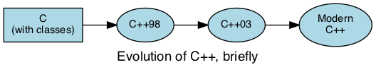

1.4. What you don’t need to know (yet)¶
C++ is a large, relatively complex, language. Due to its size, there are many topics you may have not covered, covered incompletely, or covered incorrectly. Luckily for all of us, there is a relatively simple language buried inside C++. One of the goals of this text is to concentrate on the simpler parts while still solving more advanced problems than found in a typical introductory text.
Pointers, for example. Pointers are tricky for some people to get used to. Very few languages outside of C and C++ give you direct access to pointers and so many ways to manipulate them. Depending on your point of view, you may consider this pure genius, or the most incredibly foolish design decision ever made by a programmer.
Modern C++ adds a variety of tools that make working with pointers easier and safer.
1.4.1. C++¶
This may sound odd, considering this is supposed to be a second semester course in C++. But as I said, C++ is a very large language. Most likely, you have learned mostly C (probably), with a very small amount of C++ thrown in:
- The classes
cinandcout - A
classwith setters and getters - maybe even usingprivatemembers
The version of C++ most likely taught to most is C++98. Modern C++ doesn’t look much like the C++ that was written in the 80’s and 90’s. Primarily because programmers have learned a lot about how to write programs in C++ over the years, but also because the power of the Standard Template Library (STL). The STL was not developed until C++ had been used for more than 10 years. While it was incorporated into the first ISO version of the C++ standard (C++98), it took some time for many programmers to recognize the power and flexibility of template programming in addition to the object-oriented programming paradigm C++ was originally designed to support.
If the language or compiler you learned does not conform to at least the C++98 version of the standard, then it’s not C++.
To add to the confusion, C++ is actually a federation of several languages:
Where ‘Modern’ C++ is C++11 and later. More specifically, the current version of the standard.
It is possible to write code in any of these languages compile it with a C++ compiler and call it a “C++ program”. This course emphasizes ‘modern’ C++. Although there is emphasis on newer language features, that does not mean that features released before 2011 should never be used. That would be impossible.
Generally, C++ gives programmers many choices and it is true that some choices are preferred over others. We will try to make preferred design and programming choices clear.
You can test the level of support for the compiler you are using by attempting to compile these examples in your environment.
A simple test for a modern C++ compiler:
The current textbook compiler supports C++14, at least partly.
The textbook online compiler has complete support for C++11 and has support for some aspects, but not all of C++14 and C++17.
1.4.2. GNU/Linux (or Unix) in general¶
And make in particular.
This course does not assume any familiarity with any specific operating system. That is, no assumptions regarding any command prompt or terminal environments, or knowledge of hardware beyond broad generalities.
This course does, however have a certain linux flair, and all projects and any labs that require handing in source code must be able to compile on the command line, preferably using make.
For all projects, a working Makefile will be provided. You won’t have to edit it.
1.4.3. Parsing command line arguments¶
Why command line programs?
C++ is primarily used in systems programming and is a fundamental part of all *nix programs. *nix is short for Unix & friends, MacOS X, and GNU/Linux.
Parsing the command line is not complicated. It is a matter of iterating through a 2 dimensional array of char.
Function main() traditionally takes two arguments that provide information
about the command line.
int argc: the total number of arguments, strings separated by white space (space or tab characters)char *argv[]: an array of these stringschar *argv[]can also be specified aschar **argv, which is the same thing, if you remember pointers from your first semester. If not, we’ll cover it soon.
The important thing to remember is that argc and argv are
passed automatically to main and are available for use.
If you run a program named foo invoked as:
/home/dave/foo -n 10 www.sdmesa.edu
Then argc would be set = 4 and array argv would contain:
argv[0]: "/home/dave/foo"
argv[1]: "-n"
argv[2]: "10"
argv[3]: "www.sdmesa.edu"
More to Explore
- Using the getopt function - from gnu.org
- Textbook: Pointers
- C++17: constexpr if